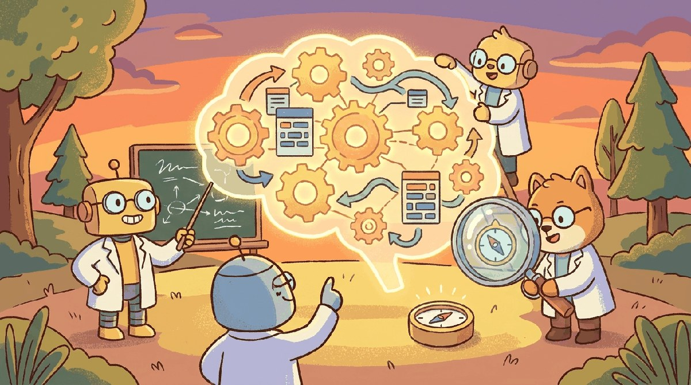

"We built the machines that reason. We are still figuring out what reasoning is."
Frontier, Theoretically-Inclined AI Agent
Chapter 75 surveyed new architectures. This chapter looks deeper: what theory we have for why transformers learn, why they generalize, why scaling laws hold, and where mechanistic interpretability, in-context learning, and emergence sit in our scientific understanding.
The empirical results of 2024-2026, from Apple's "Illusion of Reasoning" paper to Anthropic's attribution-graph studies, force a question the field had been deferring: do we have a theory of what LLMs do, or only a growing list of things they can be made to do. Empirical scaling laws (Chinchilla, then Kaplan, then the 2024 updates) are descriptive, not explanatory. Mechanistic interpretability has gone from toy circuits in 2-layer transformers to multi-million-feature crosscoders on production models, and the picture it reveals is stranger than the textbook account of attention as soft lookup. This chapter pulls four threads that, taken together, are the closest thing the field has to a 2026 theory of cognition in LLMs: a formal account of reasoning, a theory of memory as a first-class computational primitive, mechanistic interpretability at production scale, and a working definition of agency that does not collapse into either "just prompt engineering" or "already AGI."
Chapter Overview
Frontier theory is where the engineering questions become research questions. This chapter walks the formal theories of reasoning (chain-of-thought as a computational primitive, process reward models, compositional reasoning limits), memory as a computational primitive (working vs long-term memory in transformer agents, external memory and Turing-completeness), mechanistic interpretability at scale (sparse autoencoders, circuit analysis, superposition, polysemanticity), and the nature of agency (when does a model become an agent, and how do you tell?).
These four topics are the research frontier most likely to reshape the engineering picture by 2030. This chapter is the practitioner's bridge from production work into the open theoretical questions.
- Explain formal theories of reasoning in LLMs, including process reward models and compositional limits.
- Architect memory primitives (working, long-term, external) for transformer agents.
- Apply sparse autoencoders and circuit analysis to a mechanistic interpretability problem.
- Diagnose superposition and polysemanticity in feature directions.
- Reason about when a model becomes an agent and what the boundary depends on.
None of the four sections below are settled science. The reason to read them anyway is that the practitioner who knows the open questions makes better engineering decisions than the practitioner who treats LLMs as black boxes. Reasoning theories tell you when chain-of-thought prompting will help and when it is theatre; memory primitives tell you why long-context models still fail at multi-step retrieval; interpretability research tells you which features are real and which are convenient post-hoc stories; agency definitions tell you what your "agent" product actually is and is not.
Sections in This Chapter
Prerequisites
- Interpretability from Chapter 10
- Pretraining and scaling laws from Chapter 6
- Reasoning models from Chapter 8
- 81.1 A Theory of Reasoning in LLMs Formal frameworks for chain-of-thought, process reward models, compositional reasoning limits, and connections to cognitive science.
- 81.2 Memory as a Computational Primitive Memory architectures beyond context windows, working memory vs long-term memory in transformer agents, and external memory as a Turing-completeness enabler.
- 81.3 Mechanistic Interpretability at Scale Sparse autoencoders for feature discovery, circuit analysis, superposition, polysemanticity, and practical applications of interpretability research.
- 81.4 The Nature of Agency: When Does a Model Become an Agent? Is your smart thermostat an agent? It senses temperature, makes decisions, and takes actions without your involvement. What about a spam filter? A self-driving car? The answer depends on how you defin
Every claim in this chapter is a snapshot of a research field that is genuinely moving month-by-month. The superposition hypothesis, the scaling-law extrapolations, the agentic-capability definitions, and the agency thresholds in 81.4 are all working positions, not consensus. Read the cited papers, watch the next conference cycle, and recalibrate. Treating any one framework here as load-bearing for a production decision is the failure mode this chapter warns against most strongly.
What Comes Next
With the conceptual spine laid down, Chapter 58 grounds these theoretical questions in the hardware reality: where the megawatts and silicon are going, and how training-inference co-design is reshaping what counts as a frontier model.